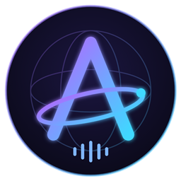

Atlas
The in-house anticheat and staff system of DustSMP. It keeps the game fair, protects the economy and backs up the staff team.
DUSTSMP · FAIR PLAYWhen you see Atlas in chat, on a kick screen or in the rules, this system is acting.
Think it was a mistake?
No anticheat is perfect. If you were kicked or banned and did not cheat, open a ticket in our Discord with your Minecraft name, the time and the message you saw. Staff checks the logs and lifts the punishment if it was a false flag.
Open the DiscordDo not use alt accounts to get around a ban. That leads to a permanent ban on all accounts.
What Atlas does
Anticheat
Movement, combat and packet checks run for every player. Fly, speed, reach, kill aura and auto clickers get flagged.
Mod check
Your client and its mods are checked on join. Hacked clients and unfair mods are not allowed.
X-ray detection
Unusual ore mining is reported to the staff team.
Anti-dupe
Duplicated items are detected and removed, so the economy stays fair.
Exploit protection
Invalid and crash packets are blocked before they reach the server.
Staff tools
Staff can freeze players, check inventories and review reports and history.
Atlas does not read your private files. It only looks at what your client sends to the server while you play.
Allowed and not allowed
✓ Allowed
- Performance mods (Sodium, Iris, shaders)
- Minimaps without entity or cave radar
- Lunar and Badlion without cheat features
✗ Not allowed
- Hacked clients (Meteor, Wurst, LiquidBounce …)
- X-ray, ESP, tracers, kill aura, auto totem, auto clicker
- Baritone and other bots
- Mods that hide other mods from the server
Not sure about a mod? Ask in the Discord before you join with it.
When Atlas flags you
- Kick with
[Atlas] Unfair advantage detectedor a mod notice. - Repeated or clear cases lead to a temporary or permanent ban.
- Hacked clients are banned directly.
Every punishment is logged with a reason and can be reviewed by the staff team.
Report a cheater
Ingame: /report <player> and pick a reason. Every report goes straight to the staff team. Rules: /rules